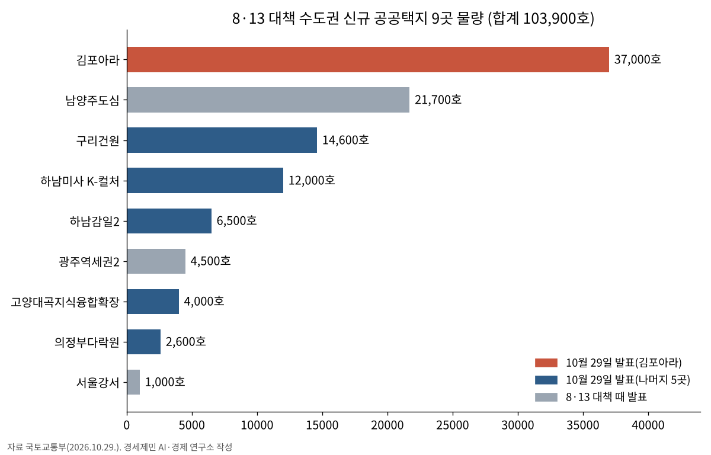
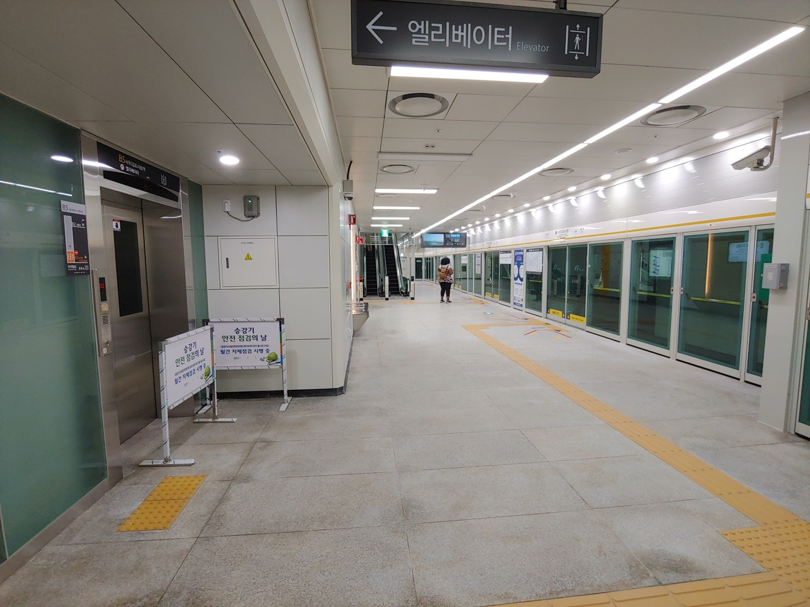

김포아라 3만7000호, 서울5호선 검단 연장선 곁에…수도권 신규택지 10.4만호 후보지 확정
국토부, 8·13 대책 후속 6곳 7만6700호 추가…인천 후보지는 없어
김포아라 365만㎡ 최대…국토부, 「5호선 연장사업 추진 중」을 입지 장점으로 꼽아
5호선 연장은 방화~인천 검단~김포 25.8㎞, 총사업비 3조5587억원
AI경제저널=김갑봉 기자 | 국토교통부(장관 홍지선)는 지난달 29일 「주택 신속 공급방안(8·13 대책)」 후속조치로 수도권 신규택지 후보지 6곳, 7만6700호를 발표했다. 앞서 발표한 3곳 2만7200호를 더하면 신규 공공택지는 9곳 10만3900호다.
이번 후보지는 경기 김포·구리·하남·의정부·고양 6곳이다. 국토부는 모두 서울 경계에서 약 5㎞ 안에 있는 교통 요충지라고 설명했다. 8·13 대책 때 발표한 3곳은 서울강서와 남양주도심, 경기광주역세권2다. 인천 후보지는 없다.
김포아라 3만7000호 최대
가장 큰 곳은 김포시 고촌읍 김포아라다. 365만㎡에 3만7000호를 짓는다. 이번 6곳 물량의 48.2%, 9곳 전체의 35.6%다(연구소 계산).
구리건원 1만4600호(144만㎡), 하남미사 K-컬처 1만2000호(131만㎡), 하남감일2 6500호(71만㎡), 고양대곡지식융합확장 4000호(42만㎡), 의정부다락원 2600호(28만㎡)가 뒤를 잇는다.
국토부는 김포아라가 서울 강서구와 붙어 있고 한강변이라 주택 수요가 높다고 설명했다. 인근에서 5호선 연장사업이 추진 중이고, 김포한강로와 수도권 제1순환고속도로도 가까워 이동이 편리하다고 밝혔다.
국토부는 한강시네폴리스 일반산업단지와 고촌 물류단지를 연계해 일자리와 주거가 결합된 자족형 생활권으로 만든다는 계획이다. 김포와 서울을 잇는 서부권 광역 생활축의 중심지로 조성한다.

5호선 연장, 인천 검단 거쳐
국토부가 김포아라의 장점으로 든 5호선 연장사업은 인천 검단을 지나는 노선이다. 인천시가 지난 3월 10일 밝힌 내용을 보면 서울5호선 김포·검단 연장사업은 서울 방화에서 인천 검단을 거쳐 김포까지 25.8㎞를 새로 놓는다. 총사업비는 3조5587억원이다.

이 사업은 같은 날 기획예산처 제3차 재정사업평가위원회 심의를 거쳐 예비타당성조사를 통과했다. 인천시는 노선이 완성되면 수도권 서북부의 만성적인 교통난을 풀고 김포골드라인 등의 혼잡도를 낮추며, 검단에서 서울로 출퇴근하는 여건이 크게 나아질 것으로 내다봤다. 시는 기본계획 수립 과정에서 대도시권광역교통위원회 등과 협력하겠다고 밝혔다.
2030년 안 착공 목표
국토부는 이번 6곳에 「공공택지 최단기 착공모델」을 적용한다. 지구 지정 단계부터 절차를 앞당겨 2030년 안에 착공하는 것이 목표다. 청년·신혼부부 같은 실수요자에게 공급한다.
투기 조사도 했다. 국토부와 사업제안자인 한국토지주택공사(LH) 전 직원과 업무 관련자의 직계존비속 토지 소유를 조사했고, 투기 의심 사례는 확인되지 않았다고 밝혔다. 지구와 인근에서 최근 3년간 이뤄진 거래 2917건 가운데 654건을 이상거래 조사 대상으로 골랐다.
정부는 8·13 대책 때 서울 개발제한구역 전역과 서울 인접 수도권 개발제한구역 등을 토지거래허가구역으로 묶었다. 이번 후보지 영향권은 허가구역을 유지하고 나머지는 푼다.
홍지선 장관은 "청년·신혼부부 등 실수요자가 선호하는 우수한 지역에 지속적으로 주택을 공급하는 것이 그 무엇보다 중요하다"며 "이번 신규택지는 지구 지정부터 착공까지 모든 절차에 최단기 착공 모델을 적용하여 신속하게 공급하는데 총력을 다하겠다"고 말했다.
참고문헌
- "수도권 '신규택지 10.4만호' 신속 공급", 국토교통부, 2026.10.29., https://www.molit.go.kr/USR/NEWS/m_71/dtl.jsp?id=95092536
- "서울5호선 검단 연장 확정...인천, 광역교통시대 개막", 인천시, 2026.3.10., https://www.incheon.go.kr/IC010205/view?repSeq=DOM_0000000014309298
[사진 출처]
- [사진1] IRTC1015, "GimpoGoldline-Sau Station-Platform.jpg", 위키미디어 공용, 퍼블릭 도메인, 2019.9.30. 촬영, https://commons.wikimedia.org/wiki/File:GimpoGoldline-Sau_Station-Platform.jpg
관련기사
- 인천 10월 소비자물가 2.7% 올라…외식 뺀 개인서비스는 4.0%로 수도권 최고
- 인천시, 천원택배 운영·배송체계 일원화…무인 집화·간편결제 도입
- 박인서 인천항만공사 사장 취임…"미해결 현안 푸는 해결사 되겠다"
- 누적 수출 9000억 달러 첫 돌파…인천 비중은 5.1%로 낮아져
저작권자 © AI경제저널 무단전재 및 재배포, AI학습 및 활용 금지